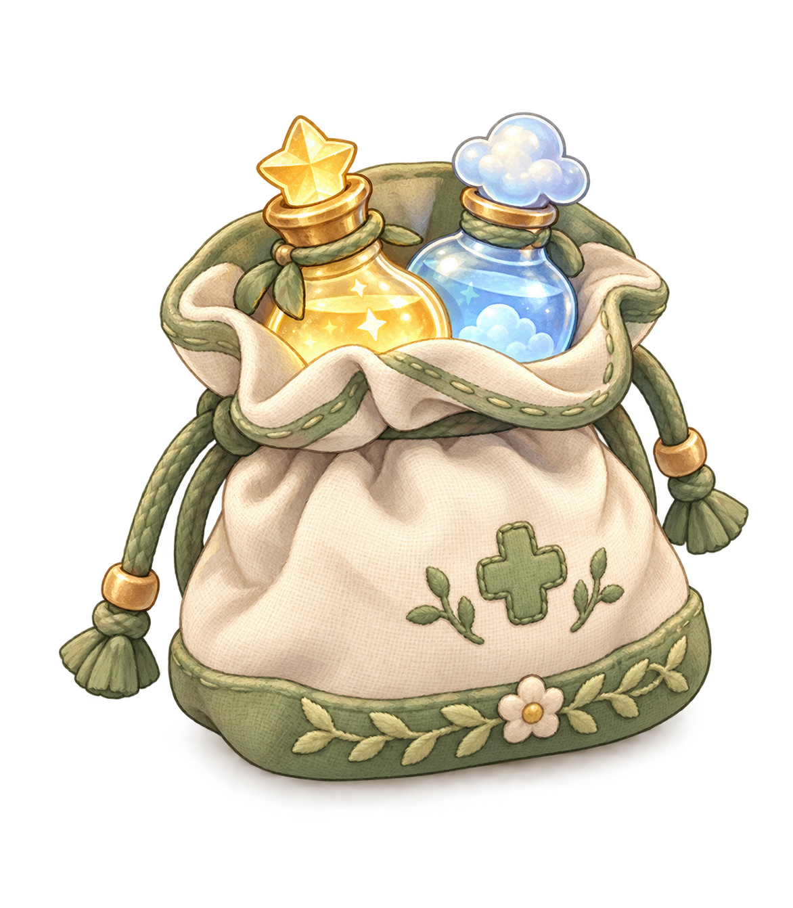

A LITTLE FARM, A LITTLE JOY
草地、阳光，还有等你的小伙伴
挑一套今天想穿的衣服
柜子里还叠着几床被子
食材可用背包或冰箱里的；做好后端到饭桌
轻轻摸摸它们，感情度会增加。长时间不陪伴，或下雨忘了带回棚里，感情度会慢慢下降。
花朵、小鱼、食物、蘑菇、虫子、木材和树叶都放在这里。
新鲜食材可存进家里的冰箱；取出的冰淇淋和冰沙可以到饭桌坐下吃。
物品在本次游戏里保留，刷新后重新开始。
老鼠、鱼、蘑菇、大树、树叶和动物，发现与捕获记录会自动保存。

人药和动物药分开标名。药袋里的药可直接使用；存进冰箱后，先取出对应病人的药。
每天使用两种对应病人的虚构药水，用完才算当天完成。漏服只会延后疗程，已完成的次数保留。冰箱药跨天未用时，需要重新取出。
选择猫狗的药后，暖暖会走近它，轻声叫醒再喂药。没完成的疗程会保留。
食材可以存取；医生开出的药按人用、动物用和病人名字分开标好。每次用药前先取出对应的药，不能混用。
猫狗可抱、可背；小马可以骑出去。羊、猪、牛和鸡留在养殖场，可进去喂食、抚摸。
睡前自动上好闹钟，到点叮铃铃响。午觉醒来仍是下午。开启声音就能听见铃声。
已经放进背包，可以慢慢看清它的样子。
节目会自动连播，也可以选一档马上看。
在家穿拖鞋。选好的外出鞋，会在出门时换上。
方向键 / WASD 移动，Shift 小跑，E 互动。附近有多个动作时，按并排提示里的 E、R、T、Y 选择，也可以直接点击按钮。点击地面也可以自动绕路前往。
抱着布偶猫或牵着萨摩耶时，短按 E 互动；按住 E 约半秒或按 Q，就能放下猫或松开牵绳。
在桥上抛竿后等浮漂，鱼会先试探鱼饵。浮漂沉下去时按 E 提竿，再按住 E 收线。拉力变红就松开一下，也可以按住屏幕按钮。走开或按 Esc 可以收起鱼竿。
树、房子、围栏和动物不能攀爬。点「骑马」上马，点「下马」回到地面。点「开门回家」探索房间，客厅可以看电视。布偶猫先住在村庄寄养所；接它时从家里拿旅行猫包，再走医院与面包店之间的楼梯。
第一次操作后播放舒缓音乐和轻流水声。右上角音符可以静音。